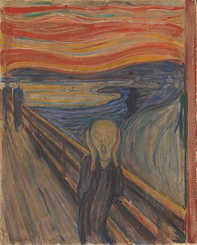

the scream
The Scream is a composition created by Norwegian artist Edvard Munch in 1893. The Norwegian name of the
piece is Skrik (Scream), and the German title under which it was first exhibited is Der Schrei der Natur
(The Scream of Nature). The agonized face in the painting has become one of the most iconic images in art,
seen as symbolizing the anxiety of the human condition. Munch's work, including The Scream, had a formative
influence on the Expressionist movement.[1]
Munch recalled that he had been out for a walk at sunset when suddenly the setting sun's light turned the
clouds "a blood red". He sensed an "infinite scream passing through nature". Scholars have located the spot
along a fjord path overlooking Oslo[2] and have suggested various explanations for the unnaturally orange
sky, ranging from the effects of a volcanic eruption to a psychological reaction by Munch to his sister's
commitment at a nearby lunatic asylum.
Munch created two versions in paint and two in pastels, as well as a lithograph stone from which several
prints survive. Both painted versions have been stolen from public museums, but since recovered. In 2012,
one of the pastel versions commanded the highest nominal price paid for an artwork at a public auction at
that time.

artist Edvard Munch
year 1893
Type Oil, tempera, pastel and crayon on cardboard
Dimensions 91 cm × 73.5 cm (36 in × 28.9 in)
Location National Museum and Munch Museum, Oslo, Norway